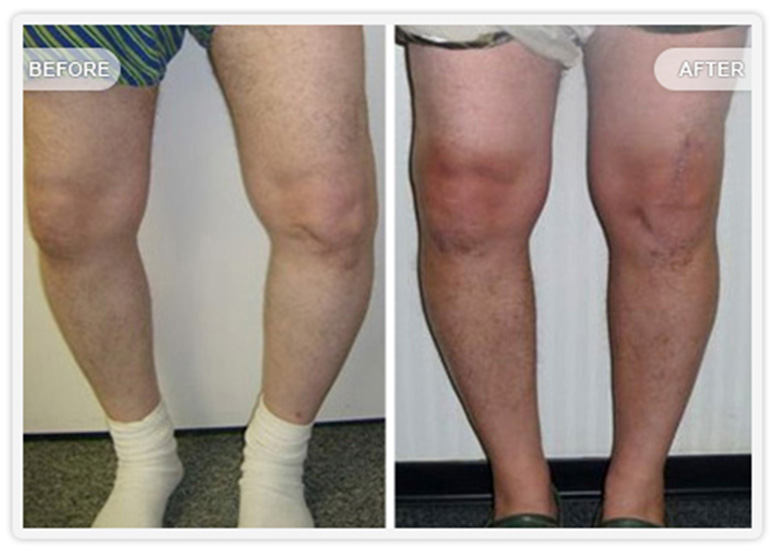
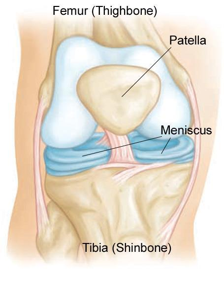

Modern Knee Care: Restoring Natural Kinematics & Rapid Ambulation
The Knee Reconstruction Wing at Advance Orthopedic & Sports Injury Hospital (AOSIH), Jaipur delivers individualized surgical solutions tailored to patient age, activity level, and deformity severity. Under the clinical leadership of Dr. Naveen Sharma (MS Ortho KEM Mumbai, 21+ yrs exp), we emphasize tissue-preserving surgical science designed to minimize post-operative pain and enable rapid return to normal living.
Subvastus Muscle-Sparing
Quadriceps tendon left completely untouched for natural muscle firing and faster stair climbing.
Walk on Day 1
Patients ambulate with physiotherapist guidance within 12 to 24 hours of surgery.
High-Flexion Implants
Engineered for deep knee bending (up to 135°–145°) and 25–30 year implant longevity.


Fast-Track Total Knee Replacement with Subvastus Technique
Traditional knee replacement approaches cut through the quadriceps muscle tendon to expose the knee joint. This causes significant post-operative pain, thigh weakness, and delayed walking.
At our hospital, Dr. Naveen Sharma routinely performs the Subvastus Approach. The joint is reached by lifting the vastus medialis muscle from below without cutting its fibers.
- Zero Quadriceps Damage: The extensor mechanism is preserved, allowing patients to lift their leg straight up on Day 1.
- Significantly Reduced Pain: Less soft tissue dissection translates into reduced requirement for heavy opioid analgesics.
- Near-Zero Blood Transfusions: Meticulous tissue handling coupled with intravenous tranexamic acid protocols keeps blood loss minimal.
- Natural Patellar Tracking: Reduces anterior knee pain and eliminates lateral release procedures.
Clinical Comparison: Subvastus Approach vs. Traditional TKR
| Clinical Parameter | Traditional Parapatellar TKR | Fast-Track Subvastus TKR |
|---|---|---|
| Muscle & Tendon Cut | Cuts through Quadriceps Tendon | Preserves Quadriceps Intact (0% Cut) |
| First Ambulation | Day 2 to Day 4 | Day 1 (Within 12–24 Hours) |
| Active Straight Leg Raise | Difficult before Day 5–7 | Achieved on Day 1 Post-Op |
| Post-Operative Pain Score | Moderate to High (Requires Opioids) | Low to Mild (Targeted Nerve Blocks) |
| Stair Climbing Ability | Week 2 to Week 3 | Day 3 to Day 5 with Supervision |
| Hospital Stay | 5 to 7 Days | 2 to 3 Days |
Keyhole Knee Arthroscopy
Knee arthroscopy is a minimally invasive surgical procedure where a miniature 4K camera (arthroscope) and precision micro-instruments are introduced into the knee through two tiny 4mm puncture holes.


Diagnostic and therapeutic arthroscopy is ideal for:
- Removing loose cartilage bodies or bone fragments causing joint locking.
- Synovectomy for inflammatory arthritis or recurrent synovitis.
- Cartilage microfracture or restoration for chondral defects.
- Same-day daycare procedure: patients go home within 4 to 6 hours.
Anatomical ACL Reconstruction for Athletes & Active Individuals
The Anterior Cruciate Ligament (ACL) is the primary stabilizer preventing forward sliding and twisting instability of the knee. An ACL rupture will not heal on its own and requires anatomical surgical reconstruction.

Graft Options & Surgical Technique
- Peroneus Longus Tendon Autograft: Dr. Sharma is a pioneer in using the peroneus tendon for ACL reconstruction. It provides high tensile strength without compromising hamstring flexion strength or causing inner thigh numbness.
- Hamstring Tendon Autograft (STG): Quadrupled semitendinosus and gracilis construct with titanium cortical suspensory fixation (EndoButton).
- Anatomical Placement: Tunnels are drilled within the native ACL footprint to restore normal biomechanics and pivot-shift stability.
Meniscus Repair & Root Fixation: "Save the Meniscus"
The meniscus acts as the shock absorber of your knee joint. Historically, surgeons trimmed torn menisci (meniscectomy), which often led to premature arthritis within 5 to 10 years.
Dr. Naveen Sharma champions the "Save the Meniscus" clinical philosophy. Using all-inside suture anchors and root transosseous pullout sutures, even complex bucket-handle and root tears are repaired, preserving your natural joint cushion.